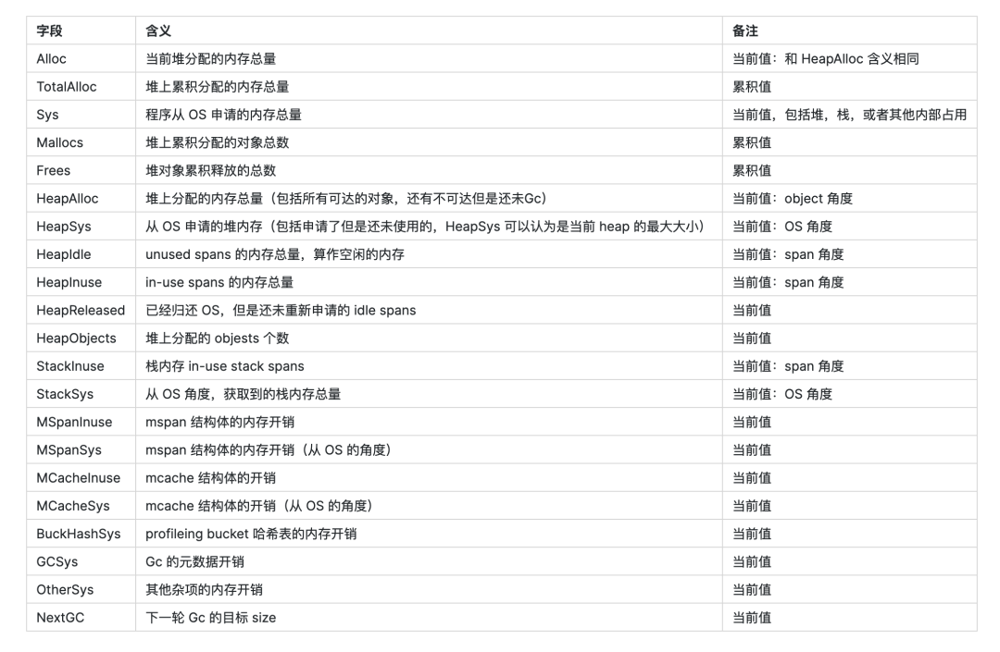

TCMalloc
TCMalloc是golang的内存分配算法,这个是用来替代malloc的内存分配函数,他可以减少内存碎片,更适用于多核,并行性更友好.
- TCMalloc用固定大小的page(页)来执行内存获取、分配等操作。这个特性跟Linux物理内存页的划分是不是有同样的道理。
- TCMalloc用固定大小的对象，比如8KB，16KB 等用于特定大小对象的内存分配，这对于内存获取或释放等操作都带来了简化的作用。
- TCMalloc还利用缓存常用对象来提高获取内存的速度。
- TCMalloc还可以基于每个线程或者每个CPU来设置缓存大小
- TCMalloc基于每个线程独立设置缓存分配策略，减少了多线程之间锁的竞争。

架构的目的是应对复杂性,让复杂的代码在性能几乎不变的情况下,可维护性,可测试性等大幅提升.
这里简单对比一下JVM中的对象管理,采用的是新生代和老年代.
主要概念
Page
内核中的内存管理单位
Span
PageHeap中的内存管理单位
ThreadCache
线程各自独立的cache,主要是管理小对象的分配
CentralCache
pageHeap和Threadcache的内存中转站,结构与Threadcache类似. 当Threadcache内存不足时从centralcache获取,过多的时候,放回centralcache.
PageHeap
保存对象是Span
pprof 使用
在tcmalloc的基础知识之后,来看怎么使用这些知识.
核心指标:
采样周期
- 通过GODEBUG的memprofilerate来修改,越低越准确,性能损耗自然越大
内存碎片率
- 内存碎片主要来自于内部, gap预期12.5%左右
主要数据解读

一个memstat样例:
sys_bytes 1.6808429272e+10 // 16029 // 系统常驻内存，单位是 M alloc_bytes 1.0527689648e+10 // 10040 // 分配出的对象，且使用的 heap_alloc_bytes 1.0527689648e+10 // 10040 // 堆上分配出来，且在使用的 heap_idle_bytes 4.272185344e+09 // 4074 // 堆上的内存，但是还没人用，等待被使用 heap_inuse_bytes 1.154125824e+10 // 11006 // 堆内存，且在使用的 heap_released_bytes 5.06535936e+08 // 483 // 释放给 os 的堆内存 heap_sys_bytes 1.5813443584e+10 // 15080.8 // 系统占用内存 stack_inuse_bytes 2.424832e+07 // 23 // 栈上的内存 stack_sys_bytes 2.424832e+07 // 23 // 栈上的内存 mcache_inuse_bytes 55552 // 0.05 // mcache 结构的内存占用 mcache_sys_bytes 65536 // 0.06 // mcache 结构的内存占用 mspan_inuse_bytes 1.87557464e+08 // 178.8 // mspan 结构的内存占用 mspan_sys_bytes 2.31292928e+08 // 220.5 // mspan 结构的内存占用 gc_sys_bytes 6.82119168e+08 // 650 // gc 的元数据 buck_hash_sys_bytes 3.86714e+06 // 3.6 // bucket hash 表的开销 other_sys_bytes 5.3392596e+07 // 50 // 用于其他的系统分配出来的内存 next_gc_bytes 1.4926500032e+10 // 14235 // 下一次 gc 的目标内存大小1
2
3
4
5
6
7
8
9
10
11
12
13
14
15
16
17
18
19
20
21
22
23